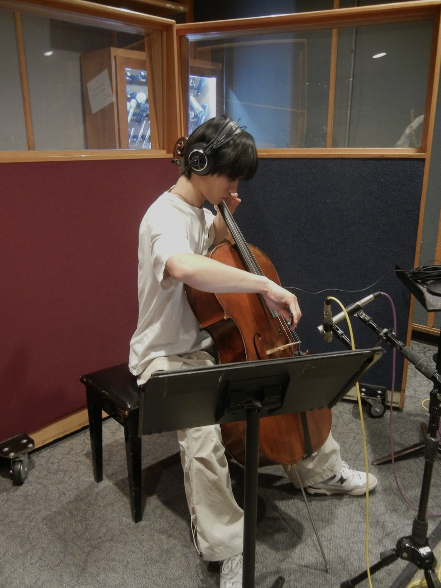

About Matthew

Matthew is a composer and sound designer who also works in audio implementation and mixing. He currently studies and works at Berklee College of Music in Boston Massachusetts; however, he will be moving to Los Angeles in the Winter of 2027.
Matthew’s cello career began as a cellist for the New York Youth Symphony. They recorded the Grammy-award-winning album during the global pandemic featuring works by Florence Price, Valerie Coleman, and Jessie Montgomery. Having explored the world of recording and engineering steered his interest in going to Berklee.
He later went to Berklee honing his skills in video games and media composition, technical sound design, and audio engineering. He spent much of his time at Berklee making connections in the music industry to mix music for individual artists, compose and sound design for games, and take session playing gigs.